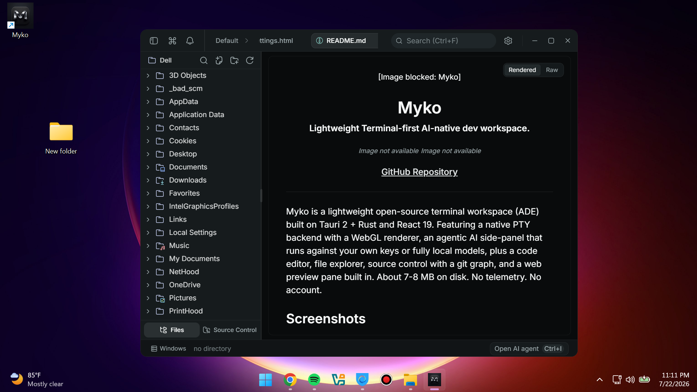
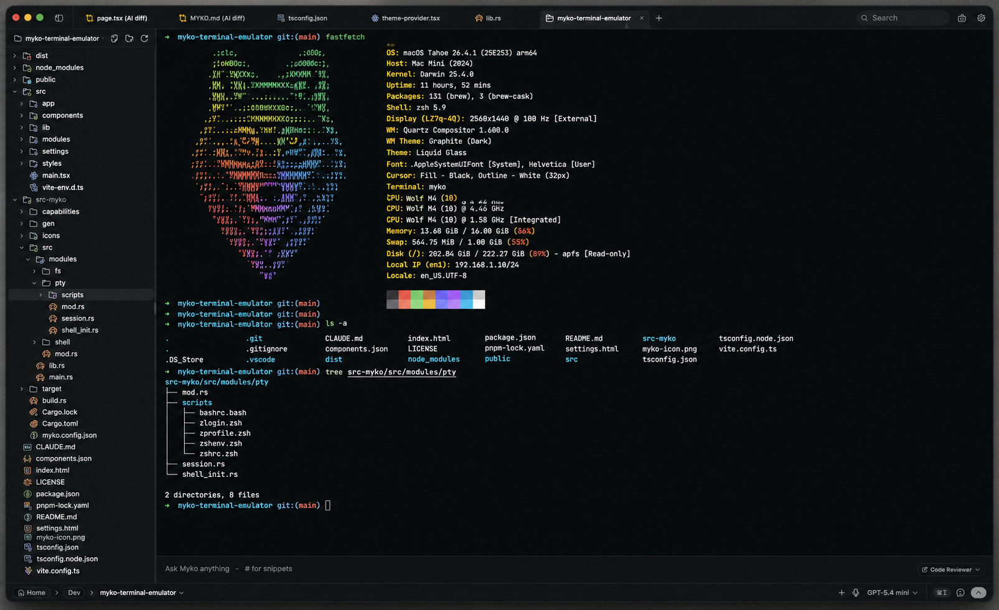
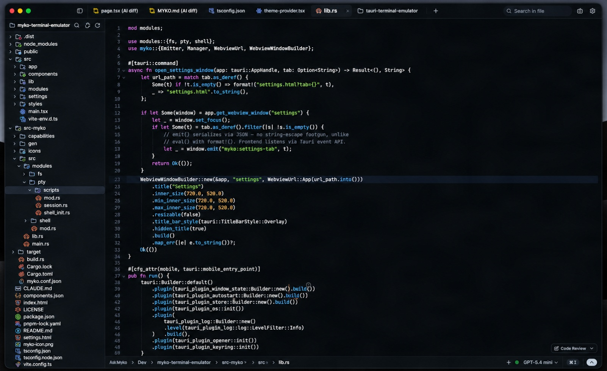
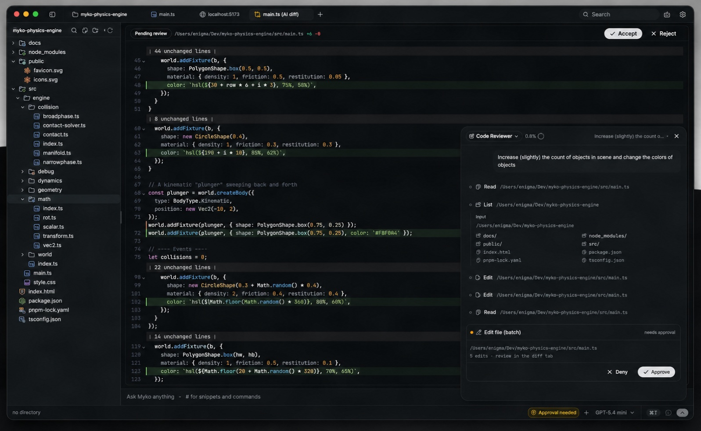
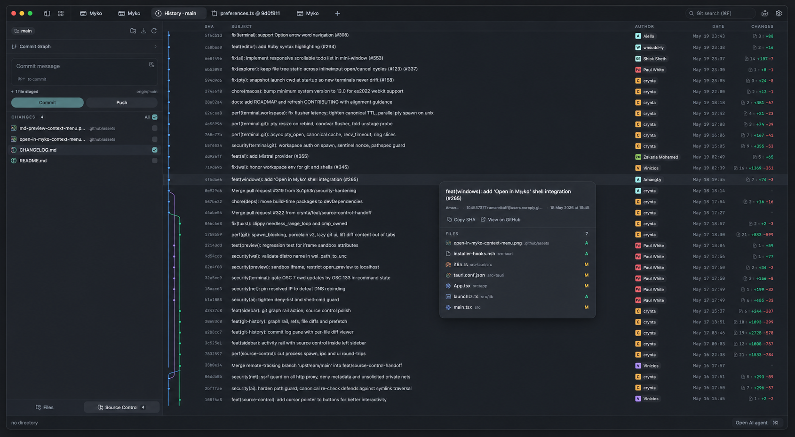
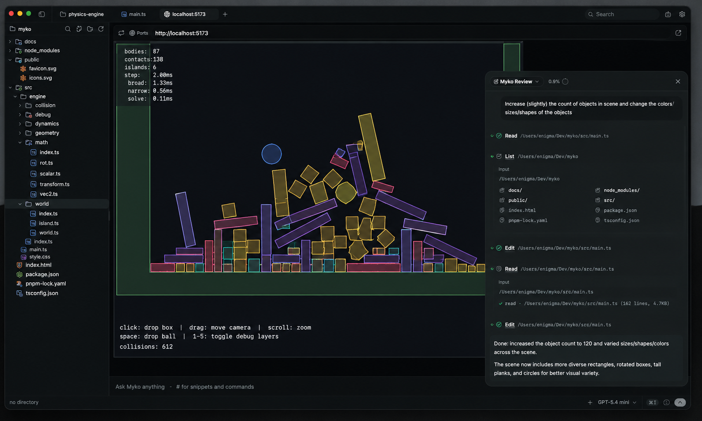
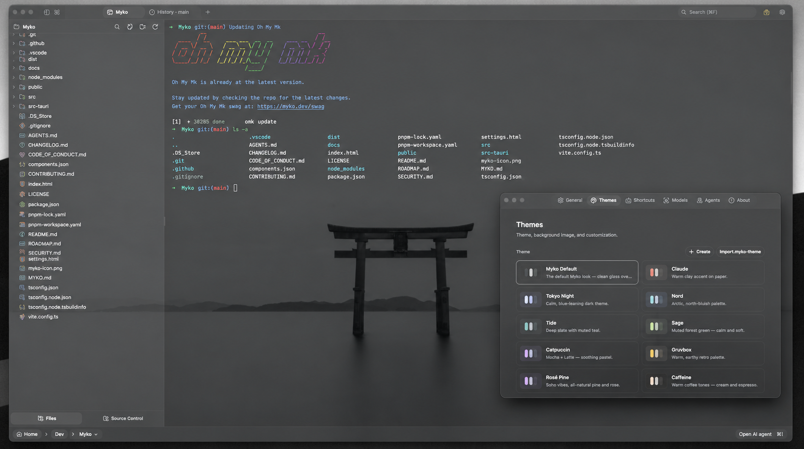

Your entire development
workspace. Built around AI.
Myko brings your terminal, editor, Git, AI agents, and a live preview into one lightweight desktop app — under 10MB on disk, cold-starts in a blink, and works fully offline if that's how you like it.

Everything you need to build, without the tab-switching.
Separate apps for your shell, editor, Git client, and AI assistant means separate context every time you switch. Myko keeps all of it — including what the agent is doing to your files right now — in one place, so nothing gets lost in translation.
Your terminal is the center of gravity.
A native PTY under a GPU-rendered front end, so it starts instantly and stays smooth under heavy scrollback.
- Instant startup — no shell warm-up lag
- Split panes, tabs, and a searchable scrollback
- File explorer built into the sidebar
- Jump straight into project-aware AI chat

Code with context, not clutter.
A CodeMirror 6 editor tuned for keyboard-first work, with AI autocomplete that understands the file you're in.
- Context-aware completions as you type
- Full Vim modes — insert, visual, replace, and more
- AI edit diffs with accept / reject, inline
- Ships with several curated color themes

Agents that plan before they touch anything.
Every request becomes a visible plan, then a set of reviewable diffs — never a silent rewrite.
- Plan mode breaks work into a task list first
- Sub-agents for parallel research and editing
- Multi-file edits, grep/glob, bash with approval gating
- Project memory via a single MYKO.md file

Git without leaving your workspace.
Stage hunks, commit, and read your history through a real commit graph — without leaving the keyboard.
- Full Git graph with branches and commits
- Hunk-level stage and unstage
- Commit templates with AI-drafted summaries
- Conflict resolution with inline merge markers

Preview your app without leaving the shell.
Auto-detects your dev server — Vite, Next, and friends — and mounts a preview pane right beside your code.
- Auto-detected dev server, no config
- Live preview pane next to your editor
- Hot reload at the speed of your dev server

Hosted, local, or both. You decide where your prompts go.
No proprietary Myko model — bring a hosted API key, or point Myko at a model running on your own machine and stay fully offline.
- OpenAI
- Anthropic
- Google Gemini
- DeepSeek
- LM Studio
- Ollama
- MLX
- OpenRouter
- Any OpenAI-compatible endpoint
Designed for developers who want control over where their code goes.
Myko doesn't collect usage analytics or crash reports, and doesn't require an account.
- No telemetry, no account, no backend server
- Bring your own key — nothing is proxied through Myko
- Run local models and stay fully offline
- Prompts and file context go only to the provider you configure
Themeable down to the last pixel.
Curated themes as a starting point, and a fully open theme spec if you want to build your own.

Open project. Ask Myko. Review. Ship.
More built in than you'd expect from a 10MB install.
Myko is open source, end to end.
Fork it, audit it, or send a pull request. The desktop app and this website are both public.
Pick a build. Run it.
No account, no sign-up, no telemetry.
Questions, answered.
Yes. It's free to use, fork, and modify. No account and no sign-up required.
Yes — both the desktop app and this website are public on GitHub under a GPL-3.0 license.
No. There's no account system and no backend server operated by this project.
Yes. Bring your own key for hosted models, or point Myko at a local model server like LM Studio and run entirely offline.
OpenAI, Anthropic, Google Gemini, DeepSeek, OpenRouter, any OpenAI-compatible endpoint, plus local models through LM Studio, Ollama, or MLX.
Nowhere, unless you send it. Everything runs locally; prompts and file context are only sent to whichever provider you configure.
Windows is available today as a signed installer, and Linux ships as an AppImage, .deb, and .rpm. macOS can be built from source — see the GitHub repo.
Open an issue on GitHub — bug reports and feature requests are both welcome.